Planning history
Explore six weekly Gantt-chart snapshots and the team's workstream activity trackers, documenting how GOOSEAGEDDON progressed towards Assessment 1.
Initial baseline
The initial schedule covers customer preparation, responsibilities, requirements, game design, risk planning, implementation and the submission milestones.
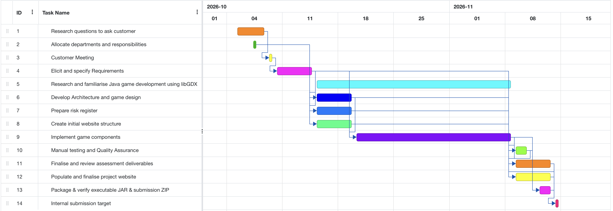
Baseline reviewed
The weekly plan retained the initial dates; the team reviewed responsibilities and work still needed for requirements and architecture.

Architecture and implementation rescheduled
Architecture was extended from 19 to 24 October to complete diagrams and gameplay workflows. Implementation was consequently rescheduled from 20 to 26 October.

Implementation underway
The plan continued with the revised architecture and implementation dates, while documentation and testing remained linked to game-component completion.

Integration and testing review
The team reviewed progress towards component completion, manual testing and documentation, retaining the revised schedule at this stage.
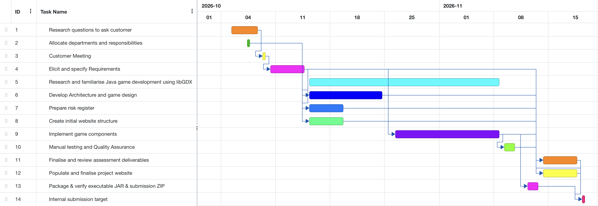
Final integration and submission preparation
Implementation completion moved from 8 to 13 November; audio work, website resources, QA and packaging were coordinated for the 16 November deadline.
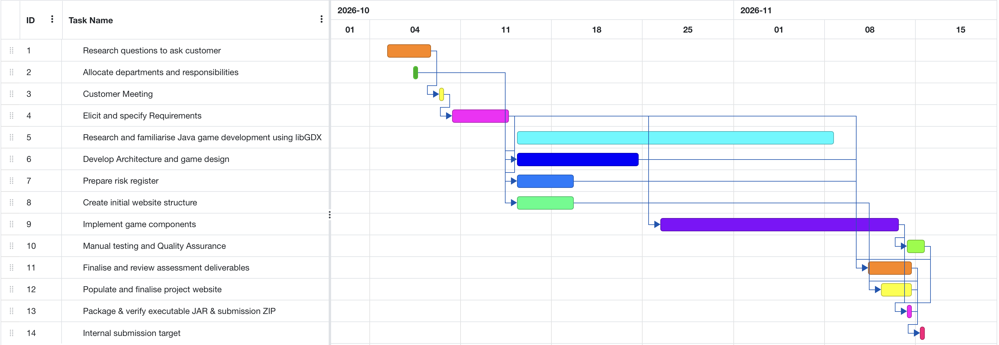
Team activity trackers
Eight screenshots organised by team or implementation workstream. Select an image to inspect task IDs, deadlines and status values at full resolution. These captures are supporting evidence and should not be interpreted as a continuous weekly audit trail.
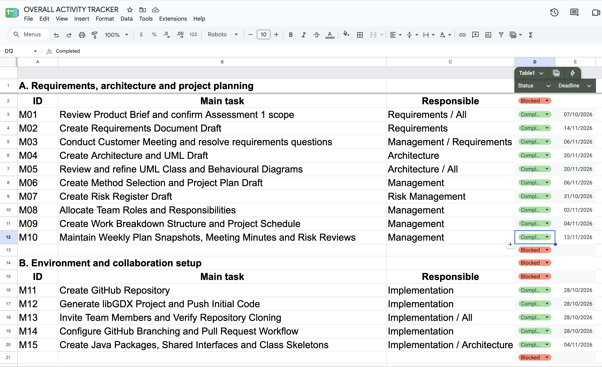
Cross-team tasks, assigned workstreams, deadlines and status overview.
View full resolution ↗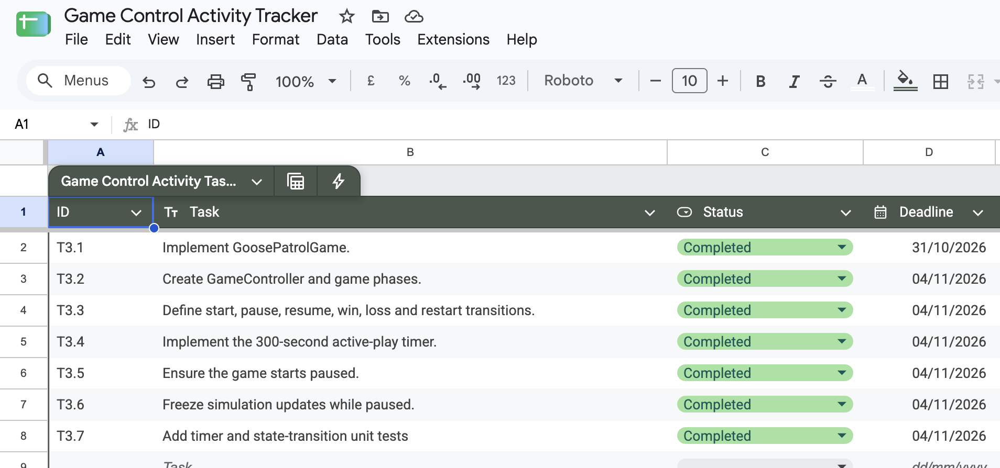
Game class, play/pause controls, timer and state transitions.
View full resolution ↗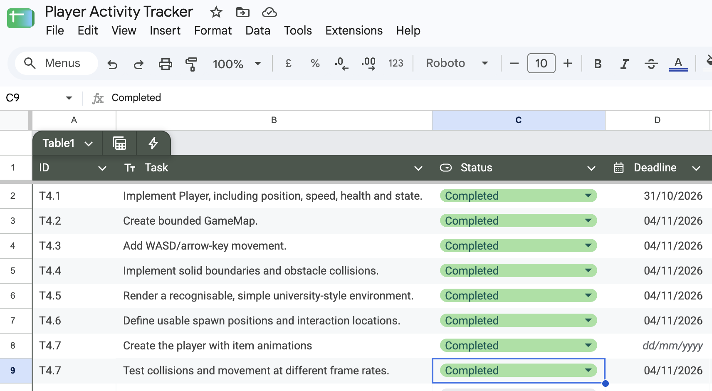
Player setup, movement, collisions, item-use animations and testing.
View full resolution ↗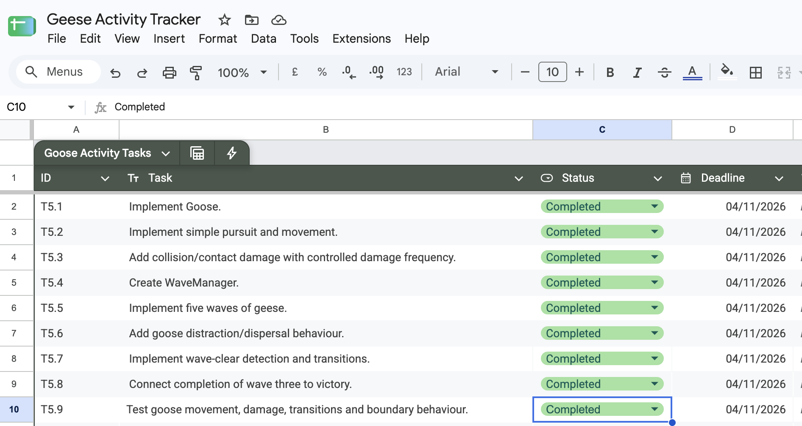
Goose behaviour, waves, collision response and victory integration.
View full resolution ↗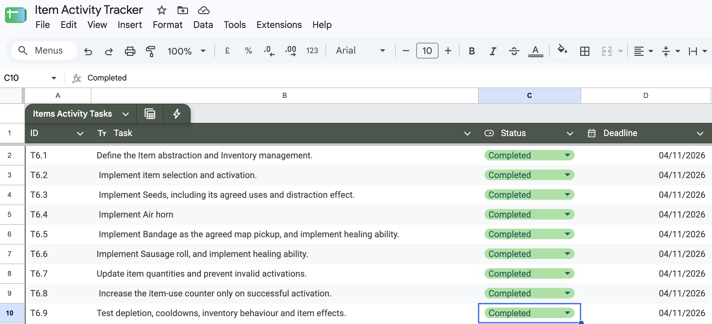
Inventory interfaces, item behaviour, counters and testing.
View full resolution ↗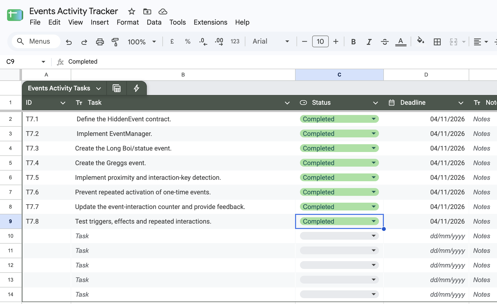
Event manager, Long Boi interaction, Greggs event and repeat-interaction checks.
View full resolution ↗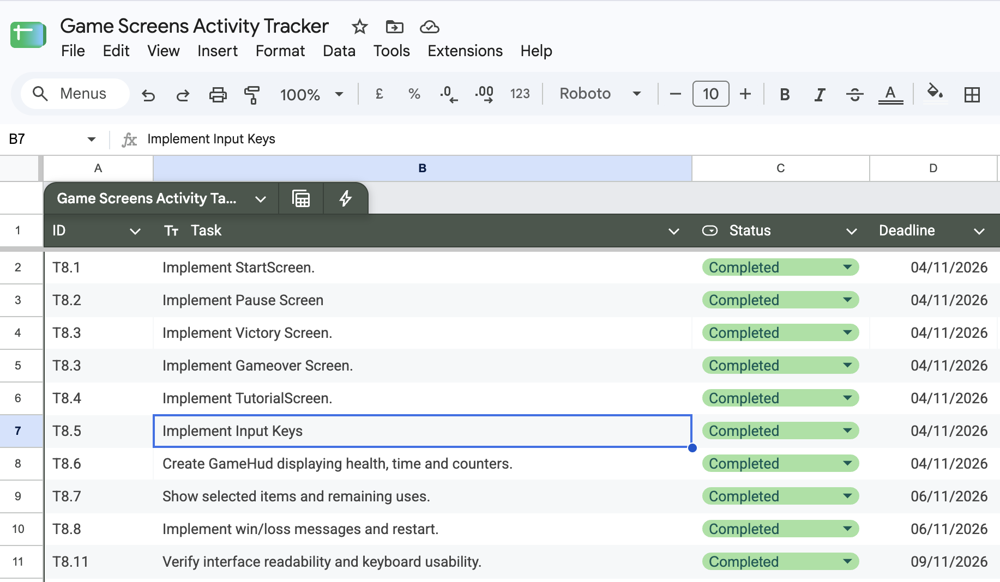
Start, pause, victory, defeat, tutorial, HUD and UI testing.
View full resolution ↗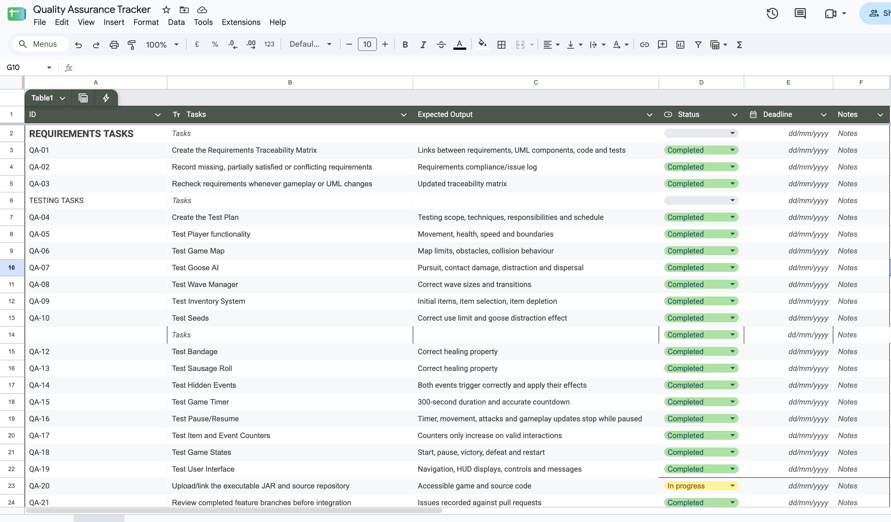
Requirements traceability, checks and reported test status.
View full resolution ↗